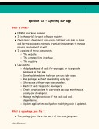

Namaste React Notes
•
114 pages
114 pages
Accessibility mode
Download document
Exit full screen
Namaste React Notes PDF
Scanning for viruses…
Go to previous page of document
Go to next page of document
Current page
11
/
Total pages
114

11
Zoom out
Zoom in
100%
125%
150%
200%
400%
800%
Enter full screen. An accessible version of the document is available in full screen mode.

![2 Namaste React Episode 01 - Inception What is a CDN ? ● A Content Delivery Network or Content Distribution Network (CDN) is a geographically distributed network of proxy servers and their data centers. ● The goal is to provide high availability and performance by distributing the service spatially relative to end users. ● CDNs have grown to serve a large portion of the internet content today, including web objects (text, graphics & scripts), downloadable objects (media files, software, documents), applications (e-commerce, portals), live streaming media, on-demand streaming media, and social media sites. ● CDNs are a layer in the internet ecosystem. Content owners such as media companies and ecommerce vendors pay CDN operators to pay their content to their end users. ● We can add React into our project by injecting CDN links in it (in an .html file). Why do we use CDN ? ● Improved scalability and connectivity. ● In addition to facilitating end-users with faster load times, which translates into greater user -experience, a content delivery Aditya Kharadkar](https://media.licdn.com/dms/image/v2/D4D1FAQEuXHAYQ0J0bA/feedshare-document-images_1280/feedshare-document-images_1280/2/1721721110308?e=1734566400&v=beta&t=9ge2unOqNXe7L_2W5dFqjQkbu74-ahRUqVqXsmqvlMA)
![3 network also rewards web publishers with increased traffic, higher page views, etc. ● Decreased bandwidth consumption. ● Lower latency. ● Latency is the lag between request and response. ● Effective traffic spike management. ● Enhanced cyber security. ● A CDN employs automation and data analytics tools that help identify firewall issues, Man in the middle threat, Distributed Denial of Service attacks. What is crossorigin and why do we use it in React CDN ? ● CORS or cross-origin resource sharing is a mechanism that allows memory resources (e.g., fonts, JavaScript, etc) on a webpage to be requested from another domain outside the domain from which the resource originated. React.development.js ● This file is the core of React. ● This file contains the whole code of React which is written in JavaScript. React-dom.development.js ● Using this file, React interacts with the browser DOM. Aditya Kharadkar](https://media.licdn.com/dms/image/v2/D4D1FAQEuXHAYQ0J0bA/feedshare-document-images_1280/feedshare-document-images_1280/3/1721721110308?e=1734566400&v=beta&t=YpDBqg-xQ8imGBf1f5WKW9uToELfMLfmmXsB7QDW-m0)

![5 Create nested elements (with sibling elements) Where should I put the <script> tag ? In the <head> or <body> ? ● The reason it was recommended to put <script> tags at the end of the <body> was so that the scripts wouldn’t stop the browser from parsing the HTML. ● When a browser gets to a <script> tag, it stops everything else and loads the files for that <script> tag and then evaluates it. ● Thus, if you put <script> tag in the <head> or at the beginning of the <body>, then the user would have to wait longer for the HTML to render, possibly leaving them staring at a blank page for a while. ● Nowadays this isn’t really a concern any more because you can force the browser to download/evaluate JS files asynchronously by using the async/defer attribute on the <script> tag. ● Be advised, these attributes only work for <script> tags loading external JS files (i.e. the src attribute is pointing to a file). Aditya Kharadkar](https://media.licdn.com/dms/image/v2/D4D1FAQEuXHAYQ0J0bA/feedshare-document-images_1280/feedshare-document-images_1280/5/1721721110308?e=1734566400&v=beta&t=9RQoYAbBEKtSa004CRJTHSDmiSuYlWool6cP8rBs7cA)
![6 What if there is already an HTML element inside the <div> which is rendered by React using render() function. ● If there is already an HTML element in the <div> tag, then that HTML element will be loaded in the DOM and shown on the page. ● But as soon as JavaScript reaches the <script> tag which imports the React code, it will replace that HTML element with the React code. What is Emmet ? ● Emmet is a free add-on for your text editor that allows you to type shortcuts that are then expanded into a full piece of code. What is the difference between a framework and a library ? 1. Library a. A library provides a set of helper functions/objects/modules which your application code calls for specific functionality. Aditya Kharadkar](https://media.licdn.com/dms/image/v2/D4D1FAQEuXHAYQ0J0bA/feedshare-document-images_1280/feedshare-document-images_1280/6/1721721110308?e=1734566400&v=beta&t=9Fmsalh7IuW4a47BYjd9ut706IHKO6oblgG4SCL68cA)
![7 b. Libraries typically focus on a narrow scope (e.g., strings, IO, sockets), so their APIs also tend to be smaller and require fewer dependencies. 2. Framework a. Framework on the other hand has defined open or unimplemented functions or objects which the user writes to create custom applications. b. Because a framework is itself an application. It has a wider scope and includes almost everything necessary to make a user application as per his own needs. ● When you use a library, you are in control of the flow of the application. ● When you use a framework, the framework is in control of the flow of the application. ● The framework dictates the architecture and how the application is structured, and you fill in the details within that structure. ● For example, a web framework will often handle routing, middleware and request processing and you define the specific actions for your application within that structure. ● In a library, you decide when and where to call library functions. ● For example, you might use a library to perform specific tasks like handling HTTP requests, manipulating data, or creating UI components. Why is React named “React” ? ● React is abruptly named because it “reacts” quickly to the changes without reloading the whole page. ● It uses the virtual DOM to efficiently update parts of a webpage. Aditya Kharadkar](https://media.licdn.com/dms/image/v2/D4D1FAQEuXHAYQ0J0bA/feedshare-document-images_1280/feedshare-document-images_1280/7/1721721110308?e=1734566400&v=beta&t=BKgpHeu8timQtj6uCZNqhgeZ2kSsOvXvY5Oxk64E7u8)
![8 ● It’s built around components that ‘react’ and update. What is the difference between React and React-dom ? ● React is a JavaScript library, designed for building better user interfaces. ● React-dom is a complementary library to React which glues React to the browser DOM. ● While React provides the tools and concepts to define component-based user interfaces, React-dom handles the task of rendering those interfaces in a web environment. Explain the difference between Real DOM and Virtual DOM. 1. Real DOM a. Real DOM is the actual structure of the webpage. b. React updates complete document in the Real DOM. c. Real DOM is the actual web page rendered on the browser. Any changes made reflect directly on the complete webpage. 2. Virtual DOM a. Virtual DOM is the virtual representation of the Real DOM. b. React updates the state changes in virtual DOM first and then it syncs with the Real DOM. c. Virtual DOM is just like a blueprint of a machine, we can make changes in the blueprint but those will not directly apply to the machine. d. Virtual DOM is a programming concept where a virtual representation of UI is kept in memory synced with Real DOM by a library such as React-dom and this process is called reconciliation . Aditya Kharadkar](https://media.licdn.com/dms/image/v2/D4D1FAQEuXHAYQ0J0bA/feedshare-document-images_1280/feedshare-document-images_1280/8/1721721110308?e=1734566400&v=beta&t=2YJW-X3Iph-Rwk3oAYoTYos5pnAjzYZTAqKC-Ded42M)
![9 e. Virtual DOM makes the performance faster, not because the processing itself is done in less time but the reason is the amount of changed information - rather than wasting time on updating the entire page. When does React sync the changes of Virtual DOM with Real DOM ? ● React synchronizes the changes from the virtual DOM to the Real DOM during a process called reconciliation. This process involves several steps: ○ State and prop changes ○ Re-rendering ○ Diffing - React compares the new virtual DOM tree with the previous one to identify what has changed. ○ Batch updates - React doesn’t immediately update the Real DOM with each change. Instead, it batches updates to optimize performance. The batching happens within the lifecycle of an event or after a certain period of time. (e.g., after user action like clicking a button or typing in an input field). ○ Commit phase. ○ Asynchronous updates. What is the difference between react.development.js and react.production.js via CDN ? ● Use react.development.js during developing and debugging your application. It helps catch issues early by providing detailed error messages and warnings. Aditya Kharadkar](https://media.licdn.com/dms/image/v2/D4D1FAQEuXHAYQ0J0bA/feedshare-document-images_1280/feedshare-document-images_1280/9/1721721110308?e=1734566400&v=beta&t=BW-3DT9ka9Y8u490S34xlbXZNtpWIoIax4EO73LEbhc)
![10 ● Use react.production.js when deploying your application to production. It ensures better performance, faster load times by stripping out unnecessary development features. Difference between async and defer ● Async ○ Execution order - Scripts with async attributes are executed as soon as they are downloaded regardless of the order in which they appear on the document. ○ Loading behavior - The browser will download the script in the background while continuing to parse the HTML document. Once the script is downloaded, it will immediately execute, potentially interrupting the parsing of the document. ○ Use case - Best for scripts that are independent and do not rely on the DOM being fully parsed or other scripts being loaded. ● Defer ○ Execution order - Scripts with defer attribute are executed in the order they appear in the document, but only after the entire HTML document has been parsed. ○ Loading behavior - The browser will download the scripts in the background while parsing the HTML document, but will defer execution of the script until after the HTML parsing is complete. ○ Use case - Ideal for scripts that need to interact with fully parsed DOM or that depend on other scripts. Aditya Kharadkar](https://media.licdn.com/dms/image/v2/D4D1FAQEuXHAYQ0J0bA/feedshare-document-images_1280/feedshare-document-images_1280/10/1721721110308?e=1734566400&v=beta&t=22ojTRMWjixRDitHXP3aJ975kwofcqiLF7jOINN7WGU)
![11 Episode 02 - Igniting our app What is NPM ? ● NPM is a package manager. ● It is the world’s largest software registry. ● Open source developers from every continent use npm to share and borrow packages and many organizations use npm to manage private development as well. ● It consists of three components: ○ The website ○ The command line interface ○ The registry ● Use npm to: ○ Adapt packages of code for your apps, or incorporate packages as they are. ○ Download standalone tools you can use right away. ○ Run packages without downloading using npx. ○ Share code with any npm user anywhere. ○ Restrict code to specific developers. ○ Create organizations to coordinate package maintenance, coding and developers. ○ Manage multiple versions of the code and code dependencies. ○ Update applications easily when underlying code is updated. What is a package.json file ? ● The package.json file is the heart of the node.js system. Aditya Kharadkar](https://media.licdn.com/dms/image/v2/D4D1FAQEuXHAYQ0J0bA/feedshare-document-images_1280/feedshare-document-images_1280/11/1721721110308?e=1734566400&v=beta&t=ICLF--9Rbmc2zpNjnKL-WwYx-xPnK5ZkPbHZ8xwGTVc)
![12 ● It is the manifest file of any node.js project and contains the metadata of the project. ● This metadata information can be categorized into below categories: ○ Identifying metadata properties: It basically consists of the properties to identify module/project such as the name of the project, current version of the module, license, author of the project, description about the project, etc. ○ Functional metadata properties: It consists of the functional values/properties of the project/module such as entry/starting point of the module, dependencies in project scripts being used, repository link, etc. What is a bundler ? ● A JavaScript bundler is a tool that puts your code and all its dependencies together in one JavaScript file. ● It is a development tool that combines many JavaScript code files into a single one that is production-ready loadable in the browser. ● Following are the top 5 bundlers in JavaScript: ○ Browserify ○ ESbuild ○ Parcel ○ Rollup ○ Webpack Package.json is a configuration for npm. Create-react-app uses webpack bundler behind the scenes. Aditya Kharadkar](https://media.licdn.com/dms/image/v2/D4D1FAQEuXHAYQ0J0bA/feedshare-document-images_1280/feedshare-document-images_1280/12/1721721110308?e=1734566400&v=beta&t=AsRqVhrldrrRQX67RNgVD_IWBPIO9tH5mp_k86nLHtU)
![13 There are 2 types of dependencies in the package we install: 1. Dev dependencies 2. Normal dependencies Caret and Tilde in package.json 1. Tilde (~) Notation a. The Tilde (~) notation is employed to match the latest patch version while freezing the major and minor versions. b. This notation is useful for automatically updating the bug fixes, considering that patch updates primarily update bugs. 2. Caret (^) Notation a. It automatically updates both minor and patch updates. b. This is used as default notation by npm. c. If the current version of a package is ^1.2.4, and tomorrow if there is an upgrade in the package and we get a new version i.e. 1.2.5, then (^) will automatically upgrade 1.2.4 to 1.2.5. d. Caret helps in upgrading the minor versions whereas tilde helps in upgrading the major versions. What is the role of the package-lock.json file ? ● The package-lock.json file in npm simply serves as a lockfile that captures the exact versions of packages and their dependencies. ● It ensures that the same version of packages is used across different installations or environments. ● This consistency prevents unexpected package versions and helps avoid compatibility issues. Aditya Kharadkar](https://media.licdn.com/dms/image/v2/D4D1FAQEuXHAYQ0J0bA/feedshare-document-images_1280/feedshare-document-images_1280/13/1721721110308?e=1734566400&v=beta&t=huiycJ-yn6k2UKDW7mlo3_FLod4E-snizEvAs8tAxo8)
![14 ● When you install or update packages using npm, it checks the package-lock.json file to ensure the specified versions are installed. ● This lockfile is especially important when collaborating on projects as it guarantees that all the contributors use consistent package versions. Transitive Dependencies ● When a dependency has its own dependencies and those dependencies have their own dependencies, then it is known as transitive dependencies. ● In the React project, inside node modules, every dependency folder has its own package.json file which contains the dependencies and the description of that dependency. Why should we not push the node_modules to git or production ? ● Node modules are huge in size. ● If we have package.json and package-lock.json, then we can recreate the node modules anytime. ● This is why it is not recommended to push the node modules. Build our app using Parcel npx parcel index.html ● Parcel is a web application bundler, differentiated by its developer experience. ● When you run npx parcel index.html, parcel does the following: ○ Development mode (default) Aditya Kharadkar](https://media.licdn.com/dms/image/v2/D4D1FAQEuXHAYQ0J0bA/feedshare-document-images_1280/feedshare-document-images_1280/14/1721721110308?e=1734566400&v=beta&t=ik1k-9hdKNl60H06Jeg1yt9hJOcNn5WqihzMf5vZoXM)
![15 ■ It starts a development server. ■ It serves the index.html file and watches for changes in your file. ■ It automatically reloads the browser when it detects the changes. ○ Build mode (with additional options) ■ If you specify a build option (e.g., npx parcel build index.html), parcel will create an optimized, production-ready bundle. ■ It minifies the code and optimizes assets for better performance. Explain NPM ● Primary purpose ○ It is a package manager. ○ It is used to install, share, and manage dependencies in node.js projects. ● Main functions ○ Installing packages ■ You can install packages globally or locally in your project. ■ For example, npm install loadash installs the loadash package locally, and npm install -g loadash installs it globally. ○ Managing dependencies - It maintains a package.json file that lists all the dependencies of the project. ○ Running scripts Aditya Kharadkar](https://media.licdn.com/dms/image/v2/D4D1FAQEuXHAYQ0J0bA/feedshare-document-images_1280/feedshare-document-images_1280/15/1721721110308?e=1734566400&v=beta&t=W26iroHQMwuVG-1md-P5S5jrr5GH3SPIFrAVtoNKU9s)
![16 ■ You define scripts in package.json and run them using npm run script_name . ■ For example, npm run build could be a script to build your project. ○ Publishing packages - It allows developers to publish their own packages to the npm registry. Explain NPX ● Primary purpose ○ NPX is a package runner tool that comes with npm (since npm version 5.2.0). ○ It allows you to execute libraries from npm packages without needing to install them globally. ● Main functions ○ Running local binaries ■ If you have a package installed locally in your project, you can use npx to run its binaries without needing to specify the path. ■ For example, ‘ npx eslint .’ runs the local eslint library. ○ Running remote binaries ■ Npx can download and execute packages directly from the npm registry without installing them. ■ For example, npx create-react-app my-app runs the create-react-app directly. ○ Avoiding global installs ■ Npx is useful for running one-off commands without polluting your global package namespace. Aditya Kharadkar](https://media.licdn.com/dms/image/v2/D4D1FAQEuXHAYQ0J0bA/feedshare-document-images_1280/feedshare-document-images_1280/16/1721721110308?e=1734566400&v=beta&t=3ppBsntnRuVVy6DF9xTskyWB1YeSHuh4n2--b_5W3UU)
![17 ■ For example, you can use ‘npx parcel index.html’ to run parcel without needing to install it globally. Key differences between npm and npx ● Installations vs Execution ● Global installs ● Temporary use ● Ease of use Why should CDN links not be used to bring React and React-dom in the project ? ● If we use CDN links, then we will have to make a network call to bring React into our project. ● Currently we use React version 18 which is mentioned in the CDN link as well. So if in future, React version 19 comes, then we will have to change the CDN links again. ● We can install React using npm install react which will store React into node modules and will not cause any dependency issues. ● To get React from a CDN link, you will need to have a network (internet) connection. Browser scripts cannot have imports/exports ● When we install React into the application and remove the CDN links, then we will get an error which says Uncaught ReferenceError: React is not defined . ● This happens because we have installed React, but not imported it into our JavaScript file. Aditya Kharadkar](https://media.licdn.com/dms/image/v2/D4D1FAQEuXHAYQ0J0bA/feedshare-document-images_1280/feedshare-document-images_1280/17/1721721110308?e=1734566400&v=beta&t=erc8w4ZfA1RKW5TYy_rLkbBYteSNM0T40fhdvm-02hM)
![18 ● import React from ‘react’; ● When we do this, we get an error which says Browser scripts cannot have imports or exports . ● Since we are importing the app.js file in index.html using <script> tag, the browser considers it as a normal JavaScript file or a browser script. ● To make the browser understand that this is not a normal JavaScript file , but a module, we have to add an extra attribute into <script> tag. ● <script type=’module’ src=’./app.js’></script> HMR (Hot Module Replacement) ● HMR exchanges, adds, or removes modules while an application is running, without a full reload. ● This can significantly speed up development in a few ways: ○ Retain the application state which is lost during a full reload. ○ Save valuable development time by only updating what’s changed. ○ Instantly update the browser when modifications are made to the css/js file in the source code, which is almost comparable to changing styles directly in the browser’s dev tools. ● How does it work in the application ? ○ The application asks HMR runtime to check for updates. ○ The runtime asynchronous downloads the updates and notifies the application. ○ The application then asks the runtime to apply the updates. ○ The runtime synchronously applies the updates. Aditya Kharadkar](https://media.licdn.com/dms/image/v2/D4D1FAQEuXHAYQ0J0bA/feedshare-document-images_1280/feedshare-document-images_1280/18/1721721110308?e=1734566400&v=beta&t=2Hu9rlGAxKh3QDJ1D8ab1SPorlAzejQ0JkdjFYJtAYw)
![19 How does parcel know that there are changes in the file/code ? ● Parcel uses a file watching algorithm which is developed using C++. ● This algorithm keeps track of every file and every change made into a file. How does parcel perform builds so quickly ? ● When we start the server using parcel for the first time, it creates a folder in the project named .parcel-cache . ● So the parcel uses caching. And after every subsequent build, it will update the cache. What other things does the parcel do ? 1. Compressing files 2. Bundling 3. Image optimization 4. Minification 5. Consistent Hashing 6. Differential Bundling 7. Diagnostics Removing “main” key from package.json ● Inside package.json, there is a key named “main” which has a value i.e. file_name (App.js). ● This tells npm that App.js is the entry point. Aditya Kharadkar](https://media.licdn.com/dms/image/v2/D4D1FAQEuXHAYQ0J0bA/feedshare-document-images_1280/feedshare-document-images_1280/19/1721721110308?e=1734566400&v=beta&t=CcOLZbkUeOMleUrZaZ-VXQzOAARa_wOqHC108C-f9Dk)
![20 ● But since we use the parcel, we give an entry point, we get an entry point while executing the command itself. So in that case, this ‘main’ key is of no use. ● When we try to execute ‘npx parcel build index.html’, then it gives an error. Because, the entry point given in the command has a conflict with the value of ‘main’ key. ● So in that case, we should remove the ‘main’ key-value pair from package.json. Executing npx parcel index.html or npx parcel build index.html ● When we execute npx parcel index.html , parcel creates a development build and stores it in the folder named dist . ● After every subsequent change, parcel will update this dist folder every time an app/component renders or every time we save new changes. ● The same thing happens when we execute npx parcel build index.html . The only difference is parcel creates a production build and stores it in the dist folder in this case. ● Note - Do not push the folders dist and .parcel-cache into git repo because they can be regenerated. Make our app compatible with older browsers/specific browsers ● To make our app compatible with older/specific browsers, we can make use of browserslist . ● In the package.json file, we can create a list and give it name as browserslist and specify all the browsers/specific versions in the list. Aditya Kharadkar](https://media.licdn.com/dms/image/v2/D4D1FAQEuXHAYQ0J0bA/feedshare-document-images_1280/feedshare-document-images_1280/20/1721721110308?e=1734566400&v=beta&t=jbxiEUMgva_G8XPpfbz8n3yboknBceDvk6TDjhu-8Ow)

![22 Episode 03 - Laying the foundation Run development/production servers using scripts ● Currently we use below commands to create a dev and prod build ○ npx parcel index.html ○ npx parcel build index.html ● Instead we can add these commands into the scripts in the package.json file. ● Now, to start the server, we can use below commands: ○ Npm run start / npm start (dev build) ○ Npm run build (prod build) JSX ● JSX is a syntax extension for JavaScript that lets you write HTML-like markup inside a JavaScript file. ● The syntax is used by preprocessors (i.e. transpilers like babel) to transform HTML like syntax into standard JavaScript objects that a JavaScript engine will parse. Aditya Kharadkar](https://media.licdn.com/dms/image/v2/D4D1FAQEuXHAYQ0J0bA/feedshare-document-images_1280/feedshare-document-images_1280/22/1721721110308?e=1734566400&v=beta&t=u4K42ykRqBFOHc-U-GdcFiXXgQIt6L3K0w1RXvjiS9g)
![23 Babel ● Babel is a JavaScript compiler. ● Babel is a toolchain that is used to convert ECMAScript 2015+ code into a backwards compatible version of JavaScript in current and older browsers or environments. ● Babel can also convert JSX syntax. ● JSX -> React.createElement -> ReactElement - JS Object -> HTML Element (render) Creating Functional Components ● While creating a functional component, the first letter of the name of the component must be in uppercase. Otherwise React will throw an error. ● A React component is a normal JavaScript function which returns a JSX/React element. ● Example: Component composition When we use a functional component into another functional component, then it is known as component composition. Aditya Kharadkar](https://media.licdn.com/dms/image/v2/D4D1FAQEuXHAYQ0J0bA/feedshare-document-images_1280/feedshare-document-images_1280/23/1721721110308?e=1734566400&v=beta&t=-6am2DsMyxjNicYx_CecHRbzw7YTvr31FCFcQP2bpSo)
![24 Inside a functional component, we can use curly braces ({ }) inside which we can execute any JavaScript expression. E.g., variable, function, etc. Note: The code is readable because we write JSX. If the code is readable, that does not mean React is making it readable. JSX is the one which helps to achieve it. Role of type attribute in <script> tag. What options can I use there ? ● The type attribute specifies the type of the script. ● The type attribute identifies the content between the <script></script> tags. ● It has a default value which is text/javascript . ○ text/javascript - It is the basic standard of writing JavaScript code inside the <script> tag. ○ text/ecmascript - This value indicates that the script is following ECMAScript standards. ○ module - This value tells the browser that the script is a module that can import or export other files inside. ○ text/babel - This value indicates that the script is a babel type and requires babel to transpile it. ○ text/typescript - As the name suggests, the script is written in typescript. { Title } vs { <Title /> } vs { <Title></Title> } ● { Title } - This value describes the Title as a JavaScript expression or a variable. Aditya Kharadkar](https://media.licdn.com/dms/image/v2/D4D1FAQEuXHAYQ0J0bA/feedshare-document-images_1280/feedshare-document-images_1280/24/1721721110308?e=1734566400&v=beta&t=j8nBvE4YFoV18iFTViCfWgLlWuWmELPtobjOfoHdDqc)

![26 Episode 04 - Talk is cheap, show me the code Config driven UI ● Config driven UI is a technique that allows you to create user interfaces based on a configuration file such as JSON, or a typescript file that defines the layout and content of UI components. ● This can be useful for creating dynamic and customizable UIs without hard coding them. Reconciliation in React ● The React reconciliation process is the engine behind its efficient updates. ● When the state of a component changes, React needs to determine what updates are necessary to the Real DOM, which is where the reconciliation process comes into play. ● Reconciliation is React’s way of diffing the virtual DOM tree with the updated virtual DOM to determine the most efficient way to update the real DOM. ● This process allows React to apply only the necessary changes to the DOM, avoiding the costly operation of updating the entire DOM tree. ● The reconciliation algorithm is designed to optimize this process, ensuring that the minimum number of operations are performed leading to potential performance. Aditya Kharadkar](https://media.licdn.com/dms/image/v2/D4D1FAQEuXHAYQ0J0bA/feedshare-document-images_1280/feedshare-document-images_1280/26/1721721110308?e=1734566400&v=beta&t=1Hb7k_C57fbOGxoVoblj-M3hQrgY4hFr2QJY_PCEPSM)
![27 What is React fiber ? ● React fiber is a re-implementation of React;s core algorithm, designed to enhance the user interface’s responsiveness and renderability. ● The term fiber refers to a unit of work, a fundamental concept in fiber architecture. ● The React team introduced React fiber to improve the reconciliation phase of the React application, making it more efficient and effective. ● React fiber is not a feature but an ongoing implementation of React’s reconciliation algorithm. ● The React fiber reconciler, a critical part of the fiber architecture, is responsible for updating the user interfaces. ● It does this by comparing the tree with the work in progress tree. Why and when do we need keys in React ? ● Keys help React identify which items have changed, are added or are removed. ● Keys should be given to the elements inside the array to give the elements a stable identity. Can we use indexes as keys in React ? ● It is not recommended to use indexes as keys in React if the order of the items may change. Aditya Kharadkar](https://media.licdn.com/dms/image/v2/D4D1FAQEuXHAYQ0J0bA/feedshare-document-images_1280/feedshare-document-images_1280/27/1721721110308?e=1734566400&v=beta&t=nxotdmrxyM3pj_l2NhfwgiDVbrxoZaveZAR4RjoiXbo)

![29 Episode 05 - Let’s get hooked Can we have both named and default exports in the same file ? ● You can use one or both of them in the same file. ● A file can have no more than one default export, it can have as many named exports as you like. React Hooks ● React hook is a normal JavaScript function which is provided by React which has some logic written behind it (superpowers). ● These functions are written by facebook developers inside React. ○ useState() ■ When we call a useState() hook/function, it gives us a state variable/returns a state variable inside an array. ■ E.g., const [list, setList] = useState([]); ■ The second variable is used to modify the state variable. ■ Whenever a state variable changes/updates, React re-renders the component. Diff Algorithm ● Diff algorithm is used to find the difference between the updated virtual DOM and the previous virtual DOM. Aditya Kharadkar](https://media.licdn.com/dms/image/v2/D4D1FAQEuXHAYQ0J0bA/feedshare-document-images_1280/feedshare-document-images_1280/29/1721721110308?e=1734566400&v=beta&t=f7M7q4BuWBwT_OZ_DlneKCMFTd-fJlW7yXonrw8f_Jw)
![30 Episode 06 - Let’s explore the world Explain Monolithic Architecture ● A monolithic architecture is a traditional model of a software program, which is built as a unified unit that is self-contained and independent from other applications. ● A monolithic architecture is a singular, large computing network with one code base that couples all of the business concerns together. ● To make a change to this sort of application requires updating the entire stack by accessing the code base and building and deploying an updated version of the server-side interface. ● This makes updates restrictive and time consuming. ● Monoliths can be convenient early on in a project's life for ease of code management, cognitive overhead and deployment. This allows everything in monolith to be released at once. Aditya Kharadkar](https://media.licdn.com/dms/image/v2/D4D1FAQEuXHAYQ0J0bA/feedshare-document-images_1280/feedshare-document-images_1280/30/1721721110308?e=1734566400&v=beta&t=yVtjXGobXJlBNmhGVXZeEZXo3plw-AHkUyoZMagf1Es)

![32 Fetching data from an API ● There are two approaches. ○ First Approach ■ Page Loads -> Make API call -> Render UI ■ In this approach, as soon as the page loads, we will make an API call. ■ As soon as we get the API response, we will populate the data and render the UI. ○ Second Approach ■ Page Loads -> Render UI -> Make API call -> Render ■ In this approach, as soon as the page loads, we will render the skeleton of the UI. ■ Then we will make an API call. ■ Once we get the API response, then we will populate the data and render the UI. ■ In React, we are always going to follow the second approach. The fetch() global function ● The global fetch() method starts the process of fetching a resource from the network, returning a promise that is fulfilled once the response is available. ● The promise resolves to a response object representing response to your request. ● A fetch() promise only rejects when the API fails. Aditya Kharadkar](https://media.licdn.com/dms/image/v2/D4D1FAQEuXHAYQ0J0bA/feedshare-document-images_1280/feedshare-document-images_1280/32/1721721110308?e=1734566400&v=beta&t=ApQ6K0peH9bWzRvGFws6xWCRNSAezhj7V0G9KCrbjTg)
![33 Cross-origin Resource Sharing (CORS) ● CORS is an HTTP header based mechanism that allows a server to indicate any origins (domain, scheme, or port) other than its own from which a browser should permit loading resources. ● CORS also relies on a mechanism by which browsers make a ‘preflight’ request to a server hosting the cross-origin resource, in order to check that the server will permit the actual request. ● An example of cross-origin request: The frontend JavaScript code served from https://domain-a.com uses fetch to make a request for https://domain-b.com/data.json . ● For security reasons, browsers restrict cross-origin HTTP requests initiated from scripts. ● For example, fetch() and XMLHttpRequest follow the same origin policy. ● That means a web application using those can only request resources from the same origin the application was loaded from unless the response from other origins includes the right CORS headers. Note - Showing the spinner until the data is fetched on the screen is not a good practice. Aditya Kharadkar https://domain-a.com/ https://domain-b.com/data.json](https://media.licdn.com/dms/image/v2/D4D1FAQEuXHAYQ0J0bA/feedshare-document-images_1280/feedshare-document-images_1280/33/1721721110308?e=1734566400&v=beta&t=QHlQOIi1iYVm-lYua5OPXCX78FYbCb0bkdH50rmR8Ts)
![34 Shimmer UI ● When the page loads and the data is being fetched, until the data is displayed on the UI, instead of showing a spinner, we can show the skeleton of the UI. How can we change the state variable even if it is defined as a constant ? ● Consider we have a button element on clicking of which the state variable changes. ● A state variable always has an initial value. ● Whenever a state variable updates, React triggers a Reconciliation cycle i.e. React re-renders the component. ● And when the component re-renders, the state variable will have the updated value as its default value. Why do we need a useEffect() hook ? ● The useEffect() is used to handle the side effects such as fetching data and updating the DOM. ● This hook runs on every render but there is also a way of using a dependency array using which we can control the effect of rendering. ● It is used to mimic the lifecycle methods of class-based components. ● The motivation behind the introduction of useEffect is to eliminate the side effects of using class-based components. Aditya Kharadkar](https://media.licdn.com/dms/image/v2/D4D1FAQEuXHAYQ0J0bA/feedshare-document-images_1280/feedshare-document-images_1280/34/1721721110308?e=1734566400&v=beta&t=Pl2oONwe1_xfoPHvkUWvLpxR5IzCE0sNz7SLjGim1WU)
![35 ● For example, tasks like updating the DOM, fetching data from API endpoints, setting up subscriptions or timers, etc can lead to unwanted side effects. ● How does it work ? ○ You call useEffect with a callback function that contains the side effect logic. ○ By default, this function runs after every render of the component. ○ You can optionally provide a dependency array as the second argument. ○ The effect will only run again if any of the values in the dependency array changes. What is optional chaining ? ● It is a feature that simplifies the process of accessing properties and methods of nested objects or arrays when intermediate properties may be null or undefined. What is the difference between a JS expression and a JS statement ? ● Any unit of code that can be evaluated to a value is an expression. ● A statement is an instruction to perform a specific action. ● Such actions include creating a variable or a function, looping through an array of elements, etc. ● JavaScript programs are actually a sequence of statements. Aditya Kharadkar](https://media.licdn.com/dms/image/v2/D4D1FAQEuXHAYQ0J0bA/feedshare-document-images_1280/feedshare-document-images_1280/35/1721721110308?e=1734566400&v=beta&t=8_X_G_mLl8FVq3u34YCYUEzf9lbyD6PAuwdokvkk-Qc)
![36 What is Async and Await ? ● Async function ○ The Async function allows us to write promise-based code as if it were synchronous. ○ This ensures that the execution thread is not blocked. ○ Async functions always return a promise. ○ If a value is returned that is not a promise, JavaScript automatically wraps it in a resolved promise. ○ Example: ● Await keyword ○ Await keyword is used to wait for a promise to resolve. ○ It can only be used within an async block. ○ Execution pause: Await makes the code wait until the promise returns a result, allowing for cleaner and more manageable synchronous code. ○ Example: Aditya Kharadkar](https://media.licdn.com/dms/image/v2/D4D1FAQEuXHAYQ0J0bA/feedshare-document-images_1280/feedshare-document-images_1280/36/1721721110308?e=1734566400&v=beta&t=vPnDsBOGkV7QXNh5SrVSvi7jepGw3yPlJl4MchjQYTM)
![37 Episode 07 - Finding the path ● If the useEffect hook does not have a dependency array, then it will get executed on every render. ● If the dependency array is empty, the useEffect will be called only on initial render (just once when the component renders for the first time). ● If the dependency array is not empty, the useEffect is called only when the dependency changes. ● Never create a state variable using useState outside the component (functional component). ● It is used to create a local state inside a functional component. ● Never create a state variable inside if conditions since it will create inconsistency. ● Never create state variables inside for loop and functions as well. ● Always create them at the top of the functional component. Routing in React ● Whenever we want to create routes, we have to create routing configuration. ● CreateBrowserRouter from react-router-dom is used to create the routing configuration. ● The configuration means an information that tells what will happen on a specific route. Aditya Kharadkar](https://media.licdn.com/dms/image/v2/D4D1FAQEuXHAYQ0J0bA/feedshare-document-images_1280/feedshare-document-images_1280/37/1721721110308?e=1734566400&v=beta&t=5dEdetjnYXk0i58zTW-oiDAwVgMEPPYEgl3y02ZD_x8)


![40 Two types of routing 1. Client side routing 2. Server side routing ● In client side routing, the app does not make any network calls while navigating from one page to another. ● Everything happens on the client side. ● In the server side routing, when a user navigates to a path, the browser will reload, make a network call, get the page from the server, and then show it on the UI. ● This is the benefit of single page applications. We have all the components on the client side. They just get interchanged based on the route. Aditya Kharadkar](https://media.licdn.com/dms/image/v2/D4D1FAQEuXHAYQ0J0bA/feedshare-document-images_1280/feedshare-document-images_1280/40/1721721110308?e=1734566400&v=beta&t=OjfCBvkLuSLiUu-YOp_F5nrXR7Yj1R161KeXLJDD8xM)
![41 Dynamic routing ● We can extract this resId using a hook i.e., useParams from react-router-dom. ● Example: const { resId } = useParams(); What should happen if we do console.log(useState()) ? ● It will display the result of calling the useState() function in our browser’s developer console. ● const [count, setCount] = useState(0); -> [0, function] <- output Aditya Kharadkar](https://media.licdn.com/dms/image/v2/D4D1FAQEuXHAYQ0J0bA/feedshare-document-images_1280/feedshare-document-images_1280/41/1721721110308?e=1734566400&v=beta&t=0O7xuelZyEeVPyQRy8WcxA_ykeaTBdMyDsJStYXi5zI)

![43 c. Place you image in the public directory -> public/my-img.jpg d. Then reference it in your code. <img src={process.env.PUBLIC_URL + ‘/my-img.jpg’} /> 3. Loading images from a remote source a. We can load images from a remote source, such as an external URL or a backend API, by specifying the image url directly in our img tag. const img = ‘ https://example.com/img.jpg ’; <img sec={img} /> 4. Using assets within css a. We can also use images as our background images or in other css styling. Aditya Kharadkar https://example.com/img.jpg](https://media.licdn.com/dms/image/v2/D4D1FAQEuXHAYQ0J0bA/feedshare-document-images_1280/feedshare-document-images_1280/43/1721721110308?e=1734566400&v=beta&t=wAt9ovQuNL4RnJadv48ifs7AOJnYpYhK2Yo-UB9PjTk)

![45 ● So we can say that super() is a reference to the parent class constructor i.e. React.Component . ● In the above example, React.Component is also the base class of UserClass component. ● So when we pass props to super(), the props get assigned to this also. ● So to conclude, if we want to use this.props , or simply this keyword inside the constructor, we need to pass the props coming from the parent class (React.Component) in super. Loading a functional component means we are invoking/mounting that function. Loading a class-based component means we are creating an instance of the class. Creating state variables in class-based components. ● In class-based components, we define state variables in the constructor. Aditya Kharadkar](https://media.licdn.com/dms/image/v2/D4D1FAQEuXHAYQ0J0bA/feedshare-document-images_1280/feedshare-document-images_1280/45/1721721110308?e=1734566400&v=beta&t=MH9hgVhsL5mRGCKqI_lQWMYKYjE_7I8k53EAdShX4Yg)


![49 6. Then the componentDidMount() of the child class gets executed. 7. Then it goes to the parent class component and executes the componentDidMount of the parent class component. Constructor (Parent) -> render (Parent) -> Constructor (Child) -> render (Child) -> componentDidMount (Child) -> componentDidMount(Parent) What happens when there are multiple children components in the parent class component ? ● Below is the order of execution. a. Constructor (Parent) b. Render (Parent) c. Constructor (Child 1) d. Render (Child 1) e. Constructor (Child 2) f. Render (Child 2) g. componentDidMount (Child 1) h. componentDidMount (Child 2) i. componentDidMount (Parent) ● There are 2 phases in the React lifecycle a. Render phase b. Commit phase ● The constructor method and render method come under the render phase while componentDidMount comes under the commit phase . ● In the commit phase, React updates the DOM. ● Since updating the DOM is an expensive task, React batches all the constructor methods and render methods of children Aditya Kharadkar](https://media.licdn.com/dms/image/v2/D4D1FAQEuXHAYQ0J0bA/feedshare-document-images_1280/feedshare-document-images_1280/49/1721721110308?e=1734566400&v=beta&t=9qFGkaL9U_bpUuirwpHb3Z1UoafipUTlB5As9dvGZWg)
![50 components and once there is no more child component, then it performs the commit phase. ● componentDidMount is used to make an API call inside it. CreateHashRouter ● CreateHashRouter is part of the React Router library and provides routing capabilities for single-page applications. ● It’s commonly used for building client-side navigation with applications. ● Unlike traditional server side routing, it uses the fragment identifier (hash) in the URL to manage/handle routes on the client side. ● This means that changes in the URL after the # symbol do not trigger a full page reload, making it suitable for single page applications. CreateMemoryRouter ● CreateMemoryRouter is another routing component provided by React router. ● Unlike CreateHashRouter or BrowserRouter, CreateMemoryRouter is not associated with the browser’s URL. ● Instead it allows you to create an in-memory router for testing other scenarios where you don’t want to interact with the actual browser’s URL. Aditya Kharadkar](https://media.licdn.com/dms/image/v2/D4D1FAQEuXHAYQ0J0bA/feedshare-document-images_1280/feedshare-document-images_1280/50/1721721110308?e=1734566400&v=beta&t=-BpaAfGT3KCyG4A5WxmS9SoPJalRFZ_SLzuytuKzBjA)
![51 Why can’t we have the callback function of useEffect async ? ● In React, the useEffect hook is designed to handle the side effects in functional components. ● It’s a powerful and flexible tool for managing asynchronous operations, such as data fetching, API calls and more. ● However, useEffect itself cannot directly accept an async callback function. ● This is because useEffect expects its callback function to return either nothing i.e. undefined or a cleanup function, and it doesn’t work well with promises returned from the async functions. ● There are a few reasons for this: a. Return value expectation ■ The primary purpose of the useEffect callback function is to handle side effects and perform cleanup. ■ React expects us to return either nothing i.e. undefined from the callback or return a cleanup function. ■ An async function returns a promise, and it doesn’t fit well with this expected behavior. b. Execution order and timing ■ With async functions, we might not have fine-grained control over the execution order of the asynchronous code and cleanup code. ■ React relies on the returned cleanup function to handle cleanup when the component is unmounted or when the dependencies specified in the useEffect dependency array change. Aditya Kharadkar](https://media.licdn.com/dms/image/v2/D4D1FAQEuXHAYQ0J0bA/feedshare-document-images_1280/feedshare-document-images_1280/51/1721721110308?e=1734566400&v=beta&t=4WTWSWc_72UgJRdUX9ircrYu7-1muukmX9ybI2ldSDU)

![53 Episode 09 - Optimizing our app What is the Single Responsibility Principle ? ● If we have a function, a class, or a single entity in our app, it should have a single responsibility. ● For example, <Header> component in our app should have only one responsibility i.e. to display the header on the application. ● If we have a component which is doing multiple things, then we should divide that component into multiple components where each one of them has a single responsibility. ● Breaking down the code into small modules -> Modularity What is a custom hook ? ● A hook is nothing but a utility function . ● Hooks are reusable functions. ● When you have component logic that needs to be used by multiple components, we can extract that logic to a custom hook. ● A custom hook in React is a JavaScript function that allows you to extract and reuse logic involving stateful behavior and side effects from function components. ● Custom hooks enable you to encapsulate common logic in a way that can be shared across multiple components, promoting code reuse and better organization. ● Why use custom hooks ? a. Code Reusability: Custom hooks allow you to reuse stateful logic across different components without duplicating code. Aditya Kharadkar](https://media.licdn.com/dms/image/v2/D4D1FAQEuXHAYQ0J0bA/feedshare-document-images_1280/feedshare-document-images_1280/53/1721721110308?e=1734566400&v=beta&t=0Vbuj5tPKf0axWqwHC0dIsym9DKh06ofUPHVuJCNkAw)


![58 Why should we name our hook as “useOnlineStatus” ? ● It is a naming convention for custom hooks which is followed by most of the companies. ● A lot of companies use a linter which throws an error if the custom hooks are not named like this. ● It is a good practice to use the word use while naming the custom hook. ● If someone else sees the code, they will get to know that this is not a normal function but a React hook. When we are building a large-scaled application, it is important to break it down into different components (Bundles). Having a single bundle will make our app slower since a single bundle will contain all the code of the application which takes a lot of time to load. The solution for this is to split our app into smaller chunks (bundles). This process is known as below terms: 1. Chunking 2. Code Splitting 3. Dynamic Bundling 4. Lazy Loading 5. On demand loading For example, if we are developing an e-commerce application. This ecommerce app will have a cart which will contain different functionalities. So we can create a separate bundle for the Cart component. Aditya Kharadkar](https://media.licdn.com/dms/image/v2/D4D1FAQEuXHAYQ0J0bA/feedshare-document-images_1280/feedshare-document-images_1280/58/1721721110308?e=1734566400&v=beta&t=VqEZkYLruHRGqvf87JnEA_Dt0KljDj0BAkeOlrO4Gg4)
![59 This bundle will not be loaded initially. It will be loaded only when the user visits the cart page. That means, with this approach the app will have 2 bundles. One would be a normal bundle which contains all the code of the app except for the cart component. This bundle will be loaded when the user visits our app. The other bundle will contain the code of the cart component which will be loaded only when the user visits the shopping cart. That is why this process is also known as on demand loading . When and why do we need lazy() ? ● In simpler terms, lazy loading is a design pattern. ● It allows you to load parts of your application on demand to reduce the initial load time. ● For example, you can initially load the components and modules related to user login and registration. Then you can load the rest of the components based on user navigation. ● You might not feel much difference when using lazy loading for small-scaled applications. But it significantly impacts large scaled applications by reducing the initial load time. ● Ultimately it improves both the use experience and application performance. Aditya Kharadkar](https://media.licdn.com/dms/image/v2/D4D1FAQEuXHAYQ0J0bA/feedshare-document-images_1280/feedshare-document-images_1280/59/1721721110308?e=1734566400&v=beta&t=SNzKhuKbHhtQjzUH34gSajY484tLl-gwAhbgKB8to2w)
![60 Advantages of Lazy loading 1. Reduces the initial load time by reducing the bundle size. 2. Reduces browser workload. 3. Improves application performance in low-band width situations. 4. Improves user experience at initial loading. 5. Optimizes resource usage. Disadvantages of lazy loading 1. Not suitable for small scale applications. 2. Placeholder can slow down quick scrolling. 3. Requires additional communication with the server to fetch resources. 4. Can affect SEO and ranking. Example ● When we use lazy() on a component which fetches the API response, React can give us an error i.e. A component suspended while responding to synchronous input . ● To avoid or handle this error, React offers a component i.e. Suspense. Aditya Kharadkar](https://media.licdn.com/dms/image/v2/D4D1FAQEuXHAYQ0J0bA/feedshare-document-images_1280/feedshare-document-images_1280/60/1721721110308?e=1734566400&v=beta&t=-RT2fXWNo1E_KVgyPONQM1zgKoxKqQy9CNy1iJqoYbs)
![61 Suspense ● Suspense is a built-in React component which lets you temporarily render a fallback UI while its children are still loading. ● If a component tries to retrieve the API response, while it does that, we can show a fallback UI to the user until we get the API response. ● This fallback UI could be a shimmer UI as well. ● We can just wrap the lazy loaded component inside the <Suspense> component. ● This <Suspense> component has a property i.e. fallback which takes the component which must be rendered until we get the API response in this case. When and why do we need Suspense ? ● Suspense is best used when you want to display a fallback while waiting for something to load. ● The two main use cases for this are when you are waiting for data to be fetched from an API after the initial page load and when you are lazy loading other React components. Aditya Kharadkar](https://media.licdn.com/dms/image/v2/D4D1FAQEuXHAYQ0J0bA/feedshare-document-images_1280/feedshare-document-images_1280/61/1721721110308?e=1734566400&v=beta&t=9eiNkmmrCzOy3lMd9VvWetUxvrBIhzxtLfAoisecwDU)


![68 In tailwind.config.js, what does all the keys mean (content, theme, extend, plugins)? 1. Content: This key specifies the paths to all of your template files in your project. Tailwind CSS will scan these files for class names and generate only the necessary styles. This helps keep the final CSS file small and optimized. 2. Theme: This key is used to customize the default theme of Tailwind CSS. You can define your own values for colors, fonts, spacing, and more. 3. Extend: This key is used inside the theme key to extend the default theme without completely overriding it. This is useful for adding additional utilities or modifying existing ones. 4. Plugins: This key allows you to add plugins to Tailwind CSS. Plugins can add additional utilities, components, or modify the existing ones. Tailwind CSS has a variety of official plugins, or you can create your own. Why do we have a .postcssrc file ? The .postcssrc file (or postcss.config.js file in some setups) is used to configure PostCSS, a tool for transforming CSS with JavaScript plugins. PostCSS is often used in conjunction with Tailwind CSS to enable additional CSS processing capabilities. Here’s why you might have a .postcssrc file: 1. postCSS plugins: PostCSS is a powerful tool that can use a variety of plugins to perform different tasks, such as Aditya Kharadkar](https://media.licdn.com/dms/image/v2/D4D1FAQEuXHAYQ0J0bA/feedshare-document-images_1280/feedshare-document-images_1280/68/1721721110308?e=1734566400&v=beta&t=cPnBxzL0K5qW6QSdDkIXF3rc_cCL2mYA2C4d-Q_lK3Y)
![69 autoprefixing, minifying CSS, and more. The .postcssrc file specifies which plugins to use and their configurations. 2. Tailwind CSS Integration: Tailwind CSS is a PostCSS plugin. The .postcssrc file ensures that Tailwind CSS is processed correctly during the build process. 3. Autoprefixing: Autoprefixer is a PostCSS plugin that adds vendor prefixes to CSS rules, ensuring compatibility with different browsers. Including it in your .postcssrc file helps maintain cross-browser compatibility. 4. CSS Minification and Optimization: You can use plugins like cssnano for minifying and optimizing your CSS. This is particularly useful for production builds to reduce the file size. 5. Modularity and Maintainability: Having a dedicated configuration file for PostCSS allows for better modularity and maintainability. It separates PostCSS-related configurations from other parts of your build setup, making it easier to manage and update. Aditya Kharadkar](https://media.licdn.com/dms/image/v2/D4D1FAQEuXHAYQ0J0bA/feedshare-document-images_1280/feedshare-document-images_1280/69/1721721110308?e=1734566400&v=beta&t=Udq3q3_KwfkYD56IGXTjUIE18xqtE3OaL0vaRmla1x0)


![72 d. The <ItemCard /> component has a state variable i.e. showHeading which has a default value false . This value gets changed when the button is clicked by the user. e. If the showHeading is true then the Hello message will be shown, if it is false then the message will be hidden. f. Now this component manages its own state and behavior and it does not depend on its parent component. Hence it is referred to as an uncontrolled component . 2. Controlled Component a. If the state and behavior of a component is being managed by its parent component, then it is referred to as the controlled component . b. In the above example, the <ItemCard /> component does not have any state variable to manage. Aditya Kharadkar](https://media.licdn.com/dms/image/v2/D4D1FAQEuXHAYQ0J0bA/feedshare-document-images_1280/feedshare-document-images_1280/72/1721721110308?e=1734566400&v=beta&t=MfGFp3pugQB_fuhq_cqQmJO-obprRCneIwyQL8P5tYU)
![73 c. Instead, the value of showHeading is being sent from the parent component <ItemCardList /> and is being received by the <ItemCard /> component via props. d. Since the <ItemCardList /> component is now controlling the <ItemCard /> component, the <ItemCard /> is now referred to as the Controlled Component . Lifting the state up ● In the above example, the <ItemCard /> component does not control its own state, instead it is controlled by its parent component <ItemCardList />. ● But with the currently implemented code, we can not change the state by clicking the button because the parent component has no way to know about the user's interaction with the button. ● To do that, we need to let the parent component know when the button is clicked so that it can change the value of the state variable i.e. showHeading . ● This can be achieved by lifting the state up . ● In the below example, we pass a function as a prop i.e. onShow to the child component i.e. <ItemCard /> from the parent component i.e. <ItemCardList /> which sets the value of the state variable showHeading . ● In the child component, we use the onShow prop and pass it as a function to the onClick event in the button element. ● This will let the parent component know that the user has clicked the button. Then the value of the showHeading state variable will be changed. Aditya Kharadkar](https://media.licdn.com/dms/image/v2/D4D1FAQEuXHAYQ0J0bA/feedshare-document-images_1280/feedshare-document-images_1280/73/1721721110308?e=1734566400&v=beta&t=_17gDKvA5nMWkKP6jL2yF1NNHam-eHENqjEULNMAV-U)

![75 components and these children components are also parents to their children components. ● In this case, lifting the state up can lead to a situation called Prop Drilling . What is React Context ? ● React context is a method to pass props from parent to child components, by storing the props in a store (similar in redux) and using these props from the store by child components without actually passing them manually at each level of the component tree. ● Using Redux to interact with states from parent to child components is not only quite difficult to understand but also gives you more complex code. ● Through the usage of context, the understanding of concept and code is far easier than that of Redux. ● Whenever you want a store to keep your states or variables in and use them elsewhere in your program, use Context . ● Generally when we have two or more levels (height) in our component tree, it is viable to use a store instead of passing props and then lifting the state as this will create confusion and unnecessary lengthy code. Aditya Kharadkar](https://media.licdn.com/dms/image/v2/D4D1FAQEuXHAYQ0J0bA/feedshare-document-images_1280/feedshare-document-images_1280/75/1721721110308?e=1734566400&v=beta&t=ODTH4UDMSLotw5ltzjoBZXHmSLjcGifjSAkgmn_Owj0)
![76 Create and provide the context ● In the above code, a context is created using the createContext which is imported from react . ● We have given a default value this i.e. an object which has a list named items . ● We can pass any value to the context while creating it such as a string, number, list, object, etc. ● This context is now assigned to a variable named CartContext which is being exported to use in other components. ● In the above code, the CartContext is imported in the <App /> component and is being used as a wrapper of the <Header /> and <Body /> component. ● This will make the context available to access for the application. Aditya Kharadkar](https://media.licdn.com/dms/image/v2/D4D1FAQEuXHAYQ0J0bA/feedshare-document-images_1280/feedshare-document-images_1280/76/1721721110308?e=1734566400&v=beta&t=TK4G7thw832Jk3lCjgwiPv83Zxkg7h617kfSYZac3q8)
![77 ● createContext returns a context object. ● The context object itself does not hold any information. ● It represents which context other components read or provide. ● The context object has a few properties: ○ SomeContext.Provider : lets you provide the context value to components. ○ SomeContext.Consumer : is an alternative and rarely used way to read the context value. ● The above code will still throw an error because we also need to pass a default value to the Provider. Consuming the Context Aditya Kharadkar](https://media.licdn.com/dms/image/v2/D4D1FAQEuXHAYQ0J0bA/feedshare-document-images_1280/feedshare-document-images_1280/77/1721721110308?e=1734566400&v=beta&t=DTrQ-Sq2uLxcjg4WEyzODgS5DKYZ4jD9C7Up02ab3u0)

![79 Episode 12 - Let’s Build Our Store Introduction Note - Redux is not mandatory to use in our application. When we build large-scale applications where we have to manage the state of a lot of components and the application has a number of features, then using Redux in our application makes sense. In small-scale or mid-scale applications, we can still manage the state without using Redux. Redux and React both are not the same thing. Redux is not part of React. They both are different libraries. All the applications built using Redux can also be built without using it. Redux is not the only library for state management. There is also another library named Zustand . Just like we have React Dev Tools, we also have Redux Dev Tools which help us to debug our application when we use Redux. There are 2 libraries that Redux team offers: 1. react-redux: This is like a bridge between React and Redux. 2. Redux toolkit: This is a newer way of writing redux. This package is intended to be the standard way of writing Redux logic. Redux Store is like a very big JavaScript object, which has a lot of data in it, stored in a global central space. Is it a good idea to store all the data in one place ? Yes Aditya Kharadkar https://github.com/pmndrs/zustand](https://media.licdn.com/dms/image/v2/D4D1FAQEuXHAYQ0J0bA/feedshare-document-images_1280/feedshare-document-images_1280/79/1721721110308?e=1734566400&v=beta&t=yZBOZZAT_dAIWRGp6tuR4dCmCw6NAf2FnVeGdFF1ntQ)
![80 Since the Redux store contains a lot of data, we do not want it to become very big, so we make use of Slices offered by Redux. We can assume slice as a small portion of Redux store. We can create multiple slices in our store. To keep data separate, we create logical partitions in our store. These partitions are known as Slices . If we want to keep the data related to the cart, then we will create a separate slice for the cart. If we want to keep the data related to the logged in user, then we will create a separate slice for that as well. Redux says that we cannot directly modify the data in the slice. Redux offers a way to do that. Assume that we have a cartSlice which keeps track of the data in the cart. We have an Add to cart button which adds the item into the cart. By clicking on this button, we cannot directly modify our cartSlice. To modify the cartSlice, when the user clicks on the Add To Cart button, we have to dispatch an action . When we dispatch an action, it calls a function and then this function modifies the cart . Here is the flow: User clicks the button —> Dispatch an action —> Action calls a function —> Function modifies the cart slice The function which is being called by the action is known as Reducer Function . Aditya Kharadkar](https://media.licdn.com/dms/image/v2/D4D1FAQEuXHAYQ0J0bA/feedshare-document-images_1280/feedshare-document-images_1280/80/1721721110308?e=1734566400&v=beta&t=hdbzc5kbkQUyw9EL2li08uxtMgbHKoGs8HsEhVvBrFQ)
![81 So when the user clicks the button, it dispatches an action. This action calls the reducer function and this reducer function updates the slice. ********This was about writing the data into the store.********** How to read data from the store ? Suppose I want to show the count of items in the cart on my navigation bar. We can read the data from the store by something known as Selectors . When we use a selector to read the data, this phenomenon is known as Subscribing to the store . So we can say that the navigation bar is subscribed to our store. That means the navigation bar will alway be in sync with the store. If the data in the store (cart slice in this case) changes, then the data shown on the navigation bar will also change. Aditya Kharadkar](https://media.licdn.com/dms/image/v2/D4D1FAQEuXHAYQ0J0bA/feedshare-document-images_1280/feedshare-document-images_1280/81/1721721110308?e=1734566400&v=beta&t=teg9pn83DcGE5adfHEgTCkDRrONccRhAjJhbFwYPTEQ)

![83 ● Providing this store to the application is the job of react-redux . That’s why we imported Provider from react-redux . ● We then use this <Provider></Provider> as a wrapper to wrap our application inside it. ● Provider takes a property store to which we can assign our configured store. Create a slice ● createSlice() returns an object which has following properties: ○ Name ○ Initial state ○ Reducers ● The initialState is the state which a slice has in the beginning before it gets modified. ● Reducers have actions and these actions have callback functions. Aditya Kharadkar](https://media.licdn.com/dms/image/v2/D4D1FAQEuXHAYQ0J0bA/feedshare-document-images_1280/feedshare-document-images_1280/83/1721721110308?e=1734566400&v=beta&t=ohlDKOn07klaqFbg4RYt29GFkdwSEQd7jroBalm0F-o)
![84 ● addItem is a reducer function which is called as an action . ● The function which is assigned to it is responsible for modifying or updating the cartSlice. ● We have exported the reducer as a default export. ● We have also exported the actions from the slice. ● The payload of the action will contain a new item in this case which will be pushed to the items array in the state. Add the slice to the store ● The reducer key is assigned with an object which will have all the slices (cartSlice in this case). ● The reducer contains the slices where each of the slices contains its own reducer functions. Subscribing to the store ● We can subscribe to the store using a selector to read the data of the store. ● Redux offers a hook named useSelector which can be used to subscribe to the store. Aditya Kharadkar](https://media.licdn.com/dms/image/v2/D4D1FAQEuXHAYQ0J0bA/feedshare-document-images_1280/feedshare-document-images_1280/84/1721721110308?e=1734566400&v=beta&t=mxKwZws7shcpMCdrVCQ71i3xtitp_SeQ3Wm39DfwYzs)
![85 ● This useSelector gives us access to the store where we can find the cart.items. ● The items of the cart will be stored in cartItems which we can use in our component. ● Note - Make sure to access a particular state variable. In our case, we have accessed cart.items which gives us the exact value of items. ● If we subscribe only to store.cart , sometimes this store.cart may contain state variables other than items . ● If there is a change in any of those state variables, then it will re-render the cart component as well. ● So subscribing only to store.cart.items will make the Cart component re-render only when there is a change in the items . Aditya Kharadkar](https://media.licdn.com/dms/image/v2/D4D1FAQEuXHAYQ0J0bA/feedshare-document-images_1280/feedshare-document-images_1280/85/1721721110308?e=1734566400&v=beta&t=HqLD-SdSoMyEVwEEjJ9t4_0WAAO6vVA-_j1sk1ZXQ-c)

![87 ● { Payload: “apple”, } ● The handleAddItem will be responsible for dispatching the action and it is assigned to the click event of the button. So whenever the user clicks the button, the addItem action will be dispatched and it will add that item to the cart. onClick={handleAddItem} vs onClick={() => handleAddItem(item)} vs onClick={handleAddItem(item)} 1. onClick={handleAddItem} a. This syntax assigns the handleAddItem function directly to the onClick event. b. When the button is clicked, the handleAddItem function will be called without any arguments. 2. onClick={() => handleAddItem(item)} a. This syntax uses an arrow function to call handleAddItem with the item argument. b. This is useful when you need to pass specific arguments to the handleAddItem function when the button is clicked. c. Here, the item needs to be defined or in scope when the button is rendered. d. If item is a variable available in the component’s context, it will be passed to handleAddItem when the button is clicked. 3. onClick={handleAddItem(item)} a. This syntax is incorrect and will not work as expected. Aditya Kharadkar](https://media.licdn.com/dms/image/v2/D4D1FAQEuXHAYQ0J0bA/feedshare-document-images_1280/feedshare-document-images_1280/87/1721721110308?e=1734566400&v=beta&t=NgrHWkd8Q5GfoOMVN6t8S0ygJ7XNofh5cx54HvGyVAw)
![88 b. Here, handleAddItem(item) is immediately invoked when the component renders, rather than being set as a callback to be invoked on the click event. c. The return value of handleAddItem(item) (which is typically undefined unless the function returns another function) will be assigned to onClick . d. To properly call handleAddItem with an argument when the button is clicked, you should wrap it in an anonymous function, like in the second example. In older redux (vanilla redux), it was not allowed to mutate the state. We used to create a copy of our state and then modify that. We also had to return the new state. This whole process is still done by Redux behind the scenes but now it is not asking developers to do it. Redux is using the immer library to do it. In the new redux, we have to mutate the state. And it is not mandatory to return the state as well. Aditya Kharadkar](https://media.licdn.com/dms/image/v2/D4D1FAQEuXHAYQ0J0bA/feedshare-document-images_1280/feedshare-document-images_1280/88/1721721110308?e=1734566400&v=beta&t=UukgD9-4euRs8qAPrWJrHKvzu6FoXgqhAf1TdpEDqbw)
![89 Episode 13 - Time for Test Types of Testing ● Unit Testing ● Integration Testing ● End-to-End Testing (e2e testing) 1. Unit Testing a. Unit Testing is a fundamental aspect of software testing where individual components or functions of an application are tested in isolation . b. This method ensures that each unit of the application performs as expected. c. By focusing on small, manageable parts of the application, unit testing helps identify and fix bugs early in the development process, significantly improving code quality and reliability. d. Unit tests are typically automated and written by developers. 2. Integration Testing a. Integration testing is a software testing process where software components, modules, or units are tested to evaluate system compliance concerning functional requirements. Aditya Kharadkar](https://media.licdn.com/dms/image/v2/D4D1FAQEuXHAYQ0J0bA/feedshare-document-images_1280/feedshare-document-images_1280/89/1721721110308?e=1734566400&v=beta&t=o1x6UoJDwVntD6vmfTurNZ-cRhYxJ927ZHVRUW20yck)
![90 b. This testing phase is crucial to ensure seamless interactions among various units/components, their functionalities and how well they can operate as a single entity. 3. End-to-End Testing a. In e2e testing, the application is tested from the moment the user starts using the application to the moment user leaves the application. b. In this testing, we test the complete flow of the application from beginning to the end. React Testing Library (RTL) ● React Testing Library builds on top of DOM Testing Library by adding APIs for working with React components. ● React Testing Library Jest uses behind the scenes. ● Jest is a delightful JavaScript Testing Framework with a focus on simplicity. ● It works with projects using: Babel, TypeScript, Node, React, Angular, Vue and more! Install React Testing Library npm install -D @testing-library/react Install Jest npm install -D jest We are using jest with Babel, hence we need to install some dependencies as well. npm install –D babel-jest @babel/core @babel/preset-env Aditya Kharadkar https://testing-library.com/docs/react-testing-library/intro/ https://jestjs.io/](https://media.licdn.com/dms/image/v2/D4D1FAQEuXHAYQ0J0bA/feedshare-document-images_1280/feedshare-document-images_1280/90/1721721110308?e=1734566400&v=beta&t=HOzEwifma1E1KWjbMvkY8LLpRaGpdGDHOrIS67wUVEg)
![91 Once we install the dependencies, we have to configure babel as well. Create babel.config.js file and below code in it: *************************************************************** We are using parcel and parcel uses babel. So Parcel has its own configuration of babel already. When we created babel.config.js, we were creating our own configuration of babel which conflicts with the existing configuration of babel. The new configuration of babel will overwrite the existing configuration done by Parcel. To avoid this, we should refer to the official documentation of Parcel - Usage with other tools . As per the documentation, we have to create a file .parcelrc and below configuration: Aditya Kharadkar https://parceljs.org/languages/javascript#usage-with-other-tools](https://media.licdn.com/dms/image/v2/D4D1FAQEuXHAYQ0J0bA/feedshare-document-images_1280/feedshare-document-images_1280/91/1721721110308?e=1734566400&v=beta&t=gO-kOyb_KCY0Q08ISJIWx4i3HfOAwxEnNDZNrJQGMP4)
![92 When we do this configuration, babel.config.js will not conflict with the Parcel’s configuration for babel. The above configuration will disable default babel transpilation configured by Parcel. Now we can use our own config file for Babel. Command to run test cases - npm run test Configure Jest Initialize Jest - npx jest –init Answer a few questions for initializing Jest 1. Would you like to use TypeScript for the configuration file? -> no (in this case) 2. Choose the test environment that will be used for testing -> jsdom (browser-like) a. JSDOM is a library which parses and interacts with assembled HTML just like a browser. b. When we run test cases, we do not run them on the browser. But we need a browser-like environment to run them. c. JSDOM helps us to get a browser-like environment. It will give us the features of a browser. 3. Do you want to add coverage reports? -> Yes 4. Which provider should be used to instrument code for coverage? -> Babel 5. Automatically clear mock calls, instances, contexts and results before every test? -> Yes Note - If we are using Jest version 28 or later with React Testing Library, jest-environment-jsdom now must be installed separately. Aditya Kharadkar](https://media.licdn.com/dms/image/v2/D4D1FAQEuXHAYQ0J0bA/feedshare-document-images_1280/feedshare-document-images_1280/92/1721721110308?e=1734566400&v=beta&t=b8RpljpPiiMbckHlOdF682QuuiChhxye4kurRgKCdH0)
![93 Install jest-environment-jsdom npm install -D jest-environment-jsdom Basics of Testing Test a function which returns the sum of 2 numbers Approach 1: Create a folder named __tests__ . Jest will track all the files from this folder and execute the test cases. Jest will consider all the files in this folder as test files . Approach 2: Suppose we have a file sum.js . If the name of the file in which you have written test cases matches any of the below filenames, then it will be considered as a test file. 1. sum.test.js 2. sum.test.ts 3. sum.spec.js 4. sum.spec.ts Aditya Kharadkar](https://media.licdn.com/dms/image/v2/D4D1FAQEuXHAYQ0J0bA/feedshare-document-images_1280/feedshare-document-images_1280/93/1721721110308?e=1734566400&v=beta&t=iXIViagDGj74rHHiKvCCIlRG4Scd1IDdZTNl0B8-2Oc)
![94 ● Create a file named sum.test.js. ● Import the sum() function from sum.js. ● We use the test() function to write test cases. ● The test() function has 2 argument: ○ Description of the test case ○ A callback function which tests the function ● Inside the test() function, we call the sum() function by passing 2 arguments 14 and 14 and store its result into the variable. ● Then we use the expect() function and pass the variable result as an argument. Then we use the toBe() function and pass the value which we expect to be the result of the sum() function. ● This whole statement is known as assertion . This means that we are expecting the result to be 28. ● If the sum() function returns 28, then the test case will pass. Otherwise it will fail. Testing React Component We will test if the component is rendered on not. To test this, we first have to render the component on JSDOM . We will test if <Home /> component is rendered or not. Aditya Kharadkar](https://media.licdn.com/dms/image/v2/D4D1FAQEuXHAYQ0J0bA/feedshare-document-images_1280/feedshare-document-images_1280/94/1721721110308?e=1734566400&v=beta&t=5qqqk0KayI5XB8tjpl8yWd7T2SLqpiT0_Mx_w5xWxJs)
![95 ● We first imported the render function from the react testing library since we have to render the <Home /> component on JSDOM. ● Then we imported the screen object from the react testing library. Whatever is rendered on the JSDOM can be accessed using the screen object. ● Inside the test function, we first rendered the component. ● Then we know that <Home /> component has an <h1> element. So we can say that if we find the heading (<h1>) element rendered on the JSDOM, that means the component is rendered. ● So to access the heading, we use the screen object. Then this screen object has a method getByRole() which can be used to find an element by its role. ● In this case we have specified the role as heading because we are finding an <h1> element. This found element will be stored in the constant variable heading . ● Then we use the expect() function to expect our heading to be present in the document. This can be done using the toBeInTheDocument() method which tells us if the element exists in the document or not. Aditya Kharadkar](https://media.licdn.com/dms/image/v2/D4D1FAQEuXHAYQ0J0bA/feedshare-document-images_1280/feedshare-document-images_1280/95/1721721110308?e=1734566400&v=beta&t=6U5dNxIGg8T4vtR9Pft96r8UmI7Kpq7CsxOhUhrVj9U)
![96 ● Then we can run our command npm run test to test the component. When we do that, we will get the below error: This error says that we can not use JSX inside our test case. JSX isn’t enabled for our test cases. The error also says that to make the JSX work, we have to add @babel/preset-react. Install @babel/preset-react npm install -D @babel/preset-react Include @babel/preset-react inside babel config file. Why do we need to add this in the config file ? @babel/preset-react is helping to convert JSX into HTML. Now when we run npm run test, we will get another error. Aditya Kharadkar](https://media.licdn.com/dms/image/v2/D4D1FAQEuXHAYQ0J0bA/feedshare-document-images_1280/feedshare-document-images_1280/96/1721721110308?e=1734566400&v=beta&t=WDsztspSEnfDB2pdPYA1ofTJufAxqF2zAoYLHpISAqc)


![101 Testing to see if we have 2 input elements or not ● We use getAllByRole() method to get all the elements which have the specified role. ● We have specified the role as textbox to get the input elements. ● When we do console.log(inputName) , it prints the array of React elements (objects/JSX) . These React elements are the input elements we have in our document. ● Then we want to make sure that there should be 2 input elements. Hence we expect the length of inputName to be 2. Grouping of test cases ● We can group all the test cases in a file using the describe() function. ● This function takes 2 arguments: ○ Description ○ An arrow function ● Inside the arrow function, we can put all the test cases. ● We can also create groups inside a group. To do that, we can put a describe function inside a describe function. Aditya Kharadkar](https://media.licdn.com/dms/image/v2/D4D1FAQEuXHAYQ0J0bA/feedshare-document-images_1280/feedshare-document-images_1280/101/1721721110308?e=1734566400&v=beta&t=f0wKFW6CGBZEB-ENI_nh7w37oe3w7cw4qqfXJTZ1l6g)

![103 Note: Add the /coverage folder to .gitignore. This folder contains the data about how many files it has covered while testing. Testing a component which is using Redux inside ● Consider we have a <Header /> component which is using Redux to see if the user is logged in or not. ● When we write test cases for such a component, the test() or it() function does understand React and JSX, but it does not understand Redux . ● We know what we are testing the component in isolation. Hence it does not have access to the Redux store . ● So we have to provide the store to it just like we provide it to our application. ● So we have to import Provider from react-redux and wrap the <Header /> component inside <Provider store={store}>. Aditya Kharadkar](https://media.licdn.com/dms/image/v2/D4D1FAQEuXHAYQ0J0bA/feedshare-document-images_1280/feedshare-document-images_1280/103/1721721110308?e=1734566400&v=beta&t=J8SmZ-0rbqdwAPXmX001-g5oq8DYoJRq5XCIlPU0v98)
![104 Testing a component which is using <Link> element from react-router-dom ● Consider that the <Header /> component also uses the <Link> tag from react-router-dom to allow user to navigate from one page to another. ● The test() or it() function also does not know about <Link> element because it is not part of React but React router dom. ● So in order to make it work, we have to import the BrowserRouter from react-router-dom and wrap our <Header /> component inside it. Fire an event inside a test case ● Consider that inside the <Header /> component, we have a Login button . ● Upon clicking on this button, the text changes to Logout . That means before clicking the button, the text is Login and after clicking the button, the text is Logout . ● To test this, we have to fire an event inside the test case. Aditya Kharadkar](https://media.licdn.com/dms/image/v2/D4D1FAQEuXHAYQ0J0bA/feedshare-document-images_1280/feedshare-document-images_1280/104/1721721110308?e=1734566400&v=beta&t=7AMmjcBPdyltpy0G6KzIsLRdUzVBbmBSLYypqIOsX5s)
![105 ● In this test case, first we rendered the <Header> component. ● Then we tried to find the Login button using getByRole() method. We gave the role as button and we gave the additional option to make sure that the name of the button is Login . ● Then we used the fireEvent() object which has a click() method to fire the click event on loginButton . ● The we try to find the button with the name as Logout . ● Then we expect the logoutButton to be present in the document. ● This is how we know if the login button is changed to logout button after clicking the button or not. Testing a component which takes props ● Consider that we have a component <ItemCard> which shows us the details of an item such as name, price, brand name, etc. ● This component takes props as well. ● In order to test this component, we have to pass props to it while rendering it. Aditya Kharadkar](https://media.licdn.com/dms/image/v2/D4D1FAQEuXHAYQ0J0bA/feedshare-document-images_1280/feedshare-document-images_1280/105/1721721110308?e=1734566400&v=beta&t=GGkKjaU9SgR13ueLwoA-eGV8VlQuBM3OOQG5AHxf4Ug)

![107 Integration Testing ● Consider that we have <Body> component which has a Search box and Seach button . ● When the <Body> component renders on the browser, it makes an API call using the fetch() function which is offered by browser . ● Let’s test this <Body> component ● When we run the npm run test command, it gives an error: fetch is not defined. ● This error occurs because fetch() given by browser and we are rendering this <Body> component on JSDOM which is browser-like but not the actual browser. ● Hence this super power of browser i.e. fetch() does not exist on JSDOM. So we have to create a mock function the same way we created the mock data. Note: A test case does not make an actual API call. Because we do not run it on the browser, so it does not have power to talk to the world. ● The actual fetch() function returns a promise which is json which then return another promise which is our actual data returned from the API call. ● So we will have to create the mock function the same way the actual fetch() function works. Aditya Kharadkar](https://media.licdn.com/dms/image/v2/D4D1FAQEuXHAYQ0J0bA/feedshare-document-images_1280/feedshare-document-images_1280/107/1721721110308?e=1734566400&v=beta&t=yx-Xkg_qrnrCn4l03Y7N5bkC6a7tlep9SWyarpoBb6w)
![108 ● We are trying to create a mock function of the fetch() function which is in the global object . ● We then make use of jest which has a method fn() to create a function. This method takes an argument i.e. an arrow function . ● Inside the arrow function, we return a promise which resolves . This gives us the JSON which also returns a promise. ● So we assigned a function to json which returns a promise which also resolves to the actual data of the API. ● Note: This data will be the mock data we create in the mock folder . So instead of passing “data” , import the mock data and pass it here. Note: Currently, we have to run the npm run test command again and again after creating test cases. To solve that issue, we can add a new command in the package.json file inside our scripts . “watch-test”: “jest –watch” And instead of using npm run test command, we can use npm run watch-test . Aditya Kharadkar](https://media.licdn.com/dms/image/v2/D4D1FAQEuXHAYQ0J0bA/feedshare-document-images_1280/feedshare-document-images_1280/108/1721721110308?e=1734566400&v=beta&t=jA-YAlSXV0OkwOQ6algKpM0G2E1GUHl4DsFCjDKvvKs)


![111 Test case for Body component ● Inside the it() function, we first rendered the <Body> component. ● Then we try to find the search button using the its role i.e. button and name i.e. Search . ● Then we try to find the search input using its test id i.e. SearchInput . ● We know that we have a change event for the seach button. When the user types something in the search field and click the search button, then we get the search results. So we need to find out what is typed in the search field. To do that we need to fire the change event . Aditya Kharadkar](https://media.licdn.com/dms/image/v2/D4D1FAQEuXHAYQ0J0bA/feedshare-document-images_1280/feedshare-document-images_1280/111/1721721110308?e=1734566400&v=beta&t=F7RXPScTLxHqM8jyVzxkI2o_RO_zbI_qJX1xFDOqxns)
![112 ● For the change event, browser gives the event object which has a target value. But to test this feature, we can give the mock data i.e. Jeans . ● Then we fire a click event on the search button. ● Then we find the cards using their test id i.e. ItemCard . ● And we expect to have 3 results when we search for Jeans. Helper functions 1. beforeAll() - This function will be called before running all the test cases. 2. afterAll() - This function will be called after running all the test cases. 3. beforeEach() - This function will be called before running every single test case. 4. afterEach() - This function will be called after running every single test case. Aditya Kharadkar](https://media.licdn.com/dms/image/v2/D4D1FAQEuXHAYQ0J0bA/feedshare-document-images_1280/feedshare-document-images_1280/112/1721721110308?e=1734566400&v=beta&t=MKy1eThYpL6QJYxOx99RGskQRx_X-n4dZPlQPwC3D4g)
![113 Bonus - useMemo, useCallback, useRef hooks useMemo ● useMemo is a React hook that lets you cache the result of a calculation between re-renders . ● If a component is getting re-rendered again and again whenever a state variable changes or an API is called, then we do not want React to perform all the calculations again. ● Using useMemo hook, we can cache the calculations, so that even if the component re-renders, it will not perform that calculation again. Note: In strict mode, React renders the component twice to make sure that it renders properly. This happens only in the development mode. In production, it will render the component only once. ● Consider that we have a toggle button which handles the dark mode of the application. The value of the mode is saved in a state variable. Whenever the button is clicked, this state variable will change. ● This causes re-rendering of the component every time the button is clicked. ● Suppose we have a calculation in the same component which is not related to the dark mode feature. But whenever the button is clicked, the calculation is performed again. ● If the calculation is a heavy operation, then it will cause the performance issues. Aditya Kharadkar](https://media.licdn.com/dms/image/v2/D4D1FAQEuXHAYQ0J0bA/feedshare-document-images_1280/feedshare-document-images_1280/113/1721721110308?e=1734566400&v=beta&t=cRJg0yT19pCCUCUQ_lwLJ_UpvKq7nP3Tc-nyctJWbjM)
![114 ● This is when we should use the useMemo hook. The useMemo hook memoize the calculation result. ● useMemo() hook takes 2 arguments: ○ A callback function ○ A dependency array ● Callback function performs the calculation. ● And useMemo hook performs the operation only when there is a change in the dependency array. ● So even if all the state variables are changed in the component, but there is not change in the dependency array, then the calculation will not be performed again. useCallback ● useCallback is a React hook that lets you cache a function definition between re-renders . ● useCallback us quite similar to useMemo. In useMemo, we cache the result returned by a function but in useCallback, we cache the function itself. ● useCallback alse gets executed only when there is a change in the dependency array. useRef ● useRef is a React hook that lets you reference a value that’s not needed for rendering . ● When there is a case, where you want to keep some data in your component which you do not want to re-render , then we use the useRef hook. Aditya Kharadkar](https://media.licdn.com/dms/image/v2/D4D1FAQEuXHAYQ0J0bA/feedshare-document-images_1280/feedshare-document-images_1280/114/1721721110308?e=1734566400&v=beta&t=mU5CAtaR-F3cNLk_sKAo1qt2UiVh7xi_OPOj6n4qBO8)